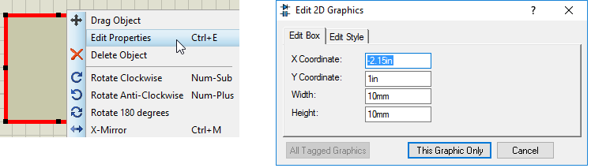

2D GRAPHICS
Introduction
Proteus supports the following types of 2D graphics objects in the schematic: lines, boxes, circles, arcs, scalable text and composite symbols. These are intended for use both directly on the drawing, for example to draw division lines and sectional boxes around parts of a design, and also for creating new library parts (devices, symbols, pins and terminals).
Placing 2D Graphics
The following are the procedures for placing the various types of graphic objects.
To place a line:
- Select the Line icon from the Mode Selector.
- Select the graphics style you want from the Object Selector.
- Click left on the Editing Window to mark the start of the line.
- Move the mouse to the end point of the line and click left again to place.
To place a box:
- Select the Box Icon from the Mode Selector.
- Select the graphics style you want from the Object Selector.
- Click left on the Editing Window to mark the start of the box.
- Move the mouse to size the box and the click left again to place.
To place a circle:
- Select the Circle Icon from the Mode Selector.
- Select the graphics style you want from the Object Selector.
- Click left on the Editing Window where you want the center of the circle to be placed.
- Move the mouse to size the circle and the click left again to place
To place an arc:
- Select the Arc Icon from the Mode Selector.
- Select the graphics style you want from the Object Selector.
- Consider the arc as lying in one quadrant of an ellipse - you will first define this quadrant. Point at the position where one end of the quadrant will lie and click the left mouse button.
- Move the mouse roughly along the path of the quadrant and release the button when you reach the other end.
- To edit the arc shape enter selection mode and then left click on the arc. Sizing handles will appear allowing you to drag the arc into the desired shape.
To place a path:
- Select the Path Icon from the Mode Selector.
- Select the graphics style you want from the Object Selector.
- Position the mouse over the Editing Window where you wish the first vertex of the path to be and click left.
- To enter a straight-line segment, simply move the mouse; to enter a curved segment, press and hold down the CTRL key and then move the mouse.
- As the mouse is moved a rubber-banded line is displayed showing the type of segment (straight or curved) that will be created and its position.
- Click left to place the second vertex and continue with the third vertex in the same way. During placement, a placed vertex can be deleted or ‘undone’ by using the 'back' button on the keyboard.
- Repeat steps five and six until your path is complete or press ESC to cancel the path entry. The path is not completed until you place a final vertex at the same point as the first vertex, so closing the path.
To place graphics text:
- Select the Text Icon from the Mode Selector.
- Select the graphics style you want from the Object Selector.
- Use the Rotation and Mirror icons to orient the text according to how you want it to appear on the drawing.
- Point at the position in the Editing Window where you want the bottom-left of the text to appear and click left. The Edit 2D Graphics Text dialogue form is displayed.
- Type the text into the dialogue form and set the justification, text size, etc. if required.
- Press ENTER or click on the OK button to place the text, press ESC or click on the CANCEL button to abort placing the text.
To place a symbol:
- Select the Symbol Icon from the Mode Selector.
- Select the graphics style you want from the Object Selector. If the symbol you want is not in the selector, you must first pick from the symbol library. The Symbol Library Pick form can be displayed by clicking on the 'P' toggle on the selector.
- Use the Rotation and Mirror icons to orient the symbol according to how you want it to appear on the drawing.
- Point at the position in the Editing Window where you want the symbol to appear, and click left to enter placement mode.
- Move the mouse to the point where you wish to place the symbol and click left again to commit and exit placement mode.
Resizing 2D Graphics
Lines, boxes, circles, arcs and paths may be resized by first of all selecting them (enter selection mode and then left click on the object) and then by dragging one or more of the displayed ‘handles’ as follows:
- Lines have two handles which adjust the start and end points.
- Boxes have eight handles which adjust the corners and edges.
- Circles have four handles, all of which adjust the radius.
- Arcs have two handles which adjust the endpoints and the two Bezier control points.
- Paths have one handle per vertex (the point between two segments) plus two Bezier control points for each curved segment.
Paths support additional editing operations that allow the path to be modified without having to be deleted and re-entered. All these operations require you to hold the ALT (think of ALT=ALTer) key down:
- Click right on a vertex handle to delete that handle. The segments either side of the handle are also removed and a straight line replaces them.
- Click left on a line or curve segment to break it in to two straight lines with a common vertex at the point clicked.
- Hold the CTRL key down and click left on a line or curve segment to break the segment in to two Bezier segments with a shared vertex at the point clicked.
Don’t forget that for all three of the above path editing operations, the ALT key must be held down!
Lines, boxes, circles, arcs can also be given a set size. Place the graphic of any size and right click > Edit Properties. You can then enter the specific dimensions:

This is similar for the the Circle (set the radius), the Line (set the end points) and the Arc (again, set the end points). The X/Y coordinates allow you to set the position of the objects.
The other types of graphic objects cannot be resized - instead you should delete and replace them to effect modifications.
Editing 2D Graphics
All 2D graphics objects can be edited in the usual way by entering selection mode and then left click on the border of the object, followed by a right click to launch that objects context menu. All 2D graphic objects except 2D graphics text have an Edit Graphics Style dialogue box on their context menu that allows you to specify local, fixed, values.
You can also select a 2D graphic (as with any object) by dragging a tagbox around the object with the left mouse button depressed. That is, press and hold the left mouse button while dragging a box around the 2D Graphics object.
See The Header Block for details of how to use 2D graphics text to display design information.